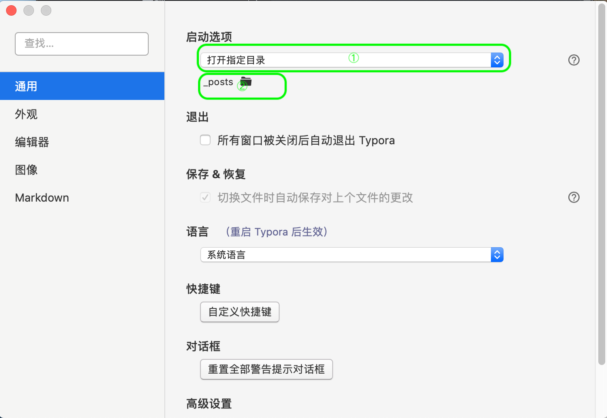
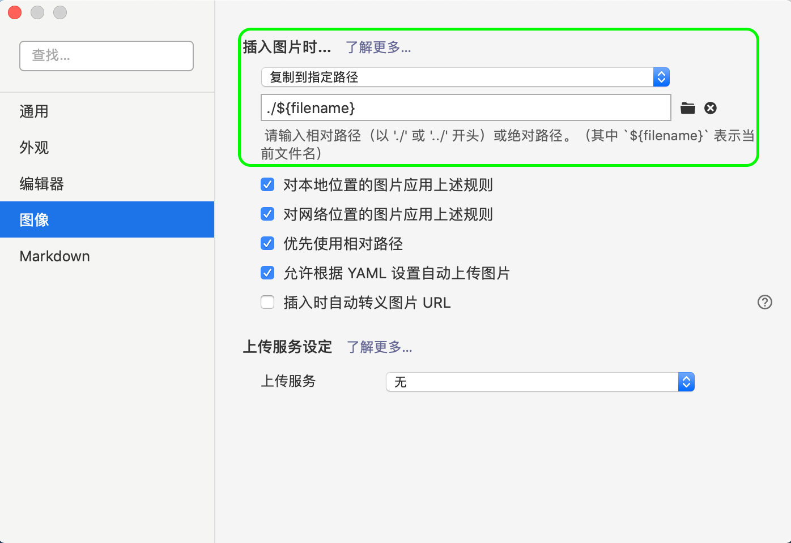

Hexo好搭档Typora
title: Hexo好搭档Typora
date: 2021-02-03 10:45:23
categories: 计算机
tags:
-
Hexo
它的功能之强大、设计之冷静、体验之美妙、理念之先进，我认为值得所有笔记应用厂商学习
——少数派
Typora是一款很优秀的Markdown编辑器（当然，拿来阅读也很错），尤其是它插入图片的非常方便，复制、拖拽、甚至插入网络图片，更重要的是它将图片转化为Markdown形式，并且可以将图片保存在指定文件夹，这个功能根Hexo配合起来简直不要太方便。
基于以上我们可以实现下列功能：
-
使用Typora编写的时候能够方便的插入图片，并且可以实时看到图片
-
Typora插入的图片能够实时同步到Hexo
-
本地使用
hexo server浏览效果时，也能够看到图片
Typora
1.下载地址：
Typora官网 滑到最下面就可以找到下载地址
2.设置
①偏好设置-->通用-->启动选项（打开指定目录）-->选择Hexo文章所在目录

这样每次打开Typora时Hexo的文章就会自动显示在左侧
②偏好设置-->图像-->插入图片时-->复制到指定路径-->./${filename}

这个时候在Typora中插入的图片就会保存到Hexo的相关目录
Hexo
1.首先我们需要修改网站的Hexo的配置文件，在本地网站的根目录下，文件名为_config.yml
# Writing
post_asset_folder: false -->post_asset_folder: true
将Writing下post_asset_folder: false 改为true，以让Hexo读取文件夹中的图片
2.这个时候我们启动hexo server还是不能在网页中显示图片，我们通过安装hexo-image-link插件来解决
npm install hexo-image-link --save
现在我们再通过下面的代码生成一篇文章时在source/_posts路径下就会生成一个同名文件夹，使用Typora在该文章中插入图片时，图片就会自动保存到该文件夹中
hexo new [name]
🔗参考：